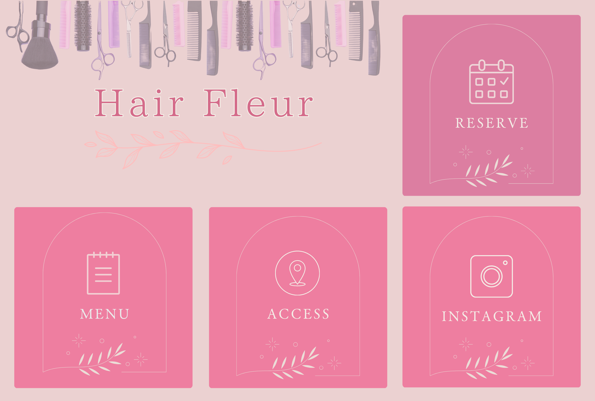

美容室のLINE公式アカウント用リッチメニュー

制作概要
美容室のLINE公式アカウント用リッチメニューを想定して制作しました。
制作意図
初めて利用する方でも迷わず必要な情報へアクセスできるよう、視認性と導線のわかりやすさを意識しました。
ターゲット
美容やヘアケアに関心が高い30〜40代女性
工夫した点
- グレージュとくすみピンクを基調に配色し、やわらかく上品な印象を表現
- 美容室を連想しやすいハサミやコームなどのモチーフを上部に配置することで、ひと目で業種が伝わるよう工夫
- また、予約ボタンは最も押してほしい導線として右上に配置し、他のボタンよりわずかに濃い色を使用することで、世界観を崩さず自然に視線を誘導できるよう設計しました。
使用ツール
Canva
一覧へ戻る